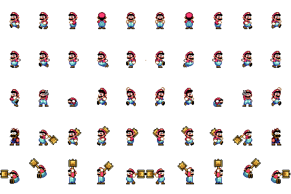
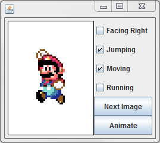

Our game has some graphics and is starting to look legitimate, but getting the right image to display for the character is a real challenge. The image to show depends on knowing if the character is moving, which way it's facing, and if it's jumping. On top of that there's animation, so you will have to keep track of which 'frame' of the animation that you're on.
Create a class named MarioImageHandler, which will be purely in charge of determining the right image to draw, given some information about the character

The instance fields will be a little bit different. The first one will be a Picture object that will hold the sprite sheet with all of the images of mario on it.
private Picture sheet = Picture.loadFromJar("MarioSacco.png");
The way that this sheet is set up, each image of mario is at the center of a 48x64 box. They are equally spaced, so again the easiest way to keep track of which image we're focused on is the row/column of its upper left corner. When it's time to get the character at that row/column, you simply multiply the column by 48 to get the x, and the row by 64 to get the y. This will allow you to use the sprite sheet's getSubPicture method to retrieve the correct image. The getSubPicture method accepts the x,y,w,h of the small image that you're trying to retrieve from your big image.
For example: if the instance field is a Picture named sheet, and we want to get the Picture at row 2, column 3, we would calculate 2*48 -> 96 for y and 3*64 -> 192 for x and use the code. Keep in mind that columns are used to calculate x and rows are used to calculate y.
Picture pic = sheet.getSubPicture(192,96,48,64);
The next two instance fields are going to be tw arrays of ints that are going to represent the row and columns of the images that we care about.
private int[] rowVals; private int[] colVals
The reason that they're arrays is so that we can have multiple sets of row/column to cycle through and animate. For example: If the fields are named rowVals and colVals and I would like to represent a Mario-Standing-Left state, I would assign the following to rowVals and colVals:
rowVals = new int[]{0};
colVals = new int[]{2};
The values were chosen because the only image that is needed is at row: 0, col: 2.
If the state that we're in involves an animation, the arrays will have many more values. For example, if I wanted to animate Mario swinging the hammer, I would assign the instance fields like so:
rowVals = new int[]{3,4,4,4,4,4};
colVals = new int[]{1,4,3,2,1,0};
Each index has a combination of row and column that represent the swinging hammer.
The last instance field will be an int that will represent the index of the animation that we're on. This will not be important for some states that only have one animation frame, but anything that requires motion will need this.
Have the constructor assign values to each of the instance fields. The sprite sheet is in the jar under the name "MarioSacco.png", the first index should be 0, and put row 0, col 2 into the instance fields as is done above. This means that our character will start out as standing.
public Picture currentImage()
This method is in charge of returning the subPicture that our instance fields represent. In order to do this we will need the x,y,width and height of the subImage. Since the width and height are fixed at 48a nd 64, we only really need to calculatye the x and y before calling the getSubPicture method. First use your index field to get the current row and column out of the two arrays. To convert to x and y, multiply the columns by 48 and the rows by 64. After you've calculated that, you should call getSubPicture and return the result.
public void nextIndex()
This method is purely in charge of incrementing the index variable. After you increase the index, look at the length of one of the arrays. If the index is out of bounds in those arrays, set it back to zero. It's very important that you do this because each animation has a different set of frames.
public void updateState(boolean facingRight, boolean jumping, boolean moving, boolean running)
This method is the beef. Its job is to look at the four booleans and to determine what the rowVals and colVals instance fields should be. This can be challenging, you have to find the set of images for each state. There's jumping left/right, standing left/right, walking left/right, and running left/right. Jumping is the special boolean that takes priority over running or walking.
Be careful to always put arrays of equal length into the rowVals and colVals variables. Otherwise you will get an out of bounds exception at some point.
The last thing that the updateState method should do is make sure that the index is in the boundary of the array that you just assigned to the rowVals/colVal arrays. You don't have to increment the index, but if it's out of bounds it should be set to 0
In the sacco jar is an object that is meant to help you test your program, but you need to follow a few steps.
- import sacco.testers.*;
- Change your ImageHandler's header so that it implements the interface sacco.testers.MarioImageHandler. Compile to make sure that you have the methods spelled correctly.
- Add the following method:
public static void main()
{
MarioImageHandler m = new MarioImageHandler();
MarioImageHandlerTester miht = new MarioImageHandlerTester(m);
miht.lanuch();
}
